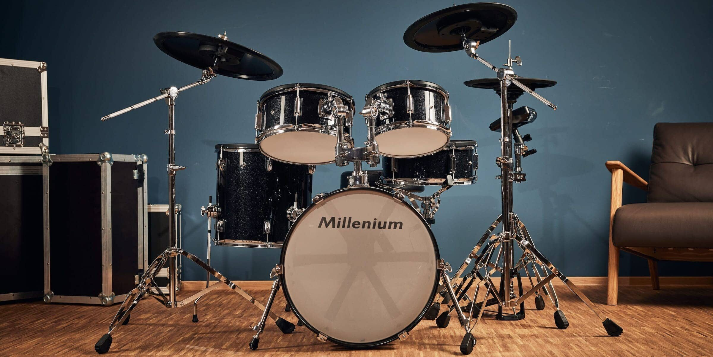

My Interests
Some of my interests include: soccer, baseball, cars, video games, computers, video editing, drums.
|

Soccer
Soccer has always been my favorite sport. I started playing soccer when I was 3 years old and played until I was 16. My Jersey number was always number 5 and my favorite player is Cristiano Ronaldo. My favorite team is Toronto FC and my dad has had season tickets for them my whole life.

Baseball
I also enjoy watching baseball, I usally watch the Toronto Blue Jays but if the are not playing I will watch whatever teams is playing at the time. I did play baseball on a team for one summer and I realized I ejoy watching more than playing.

Cars
I really enjoy cars and I like to attend car meets and car shows. I enjoy looking at everyones car build. My dream car is a Porsche 911 GT3 RS and the car I plan to buy after I finish university is a Mk8 Golf R .

Video Games
When I am am bored and have no school work to complete, I will usally play some video games. I enjoy FPS and sport games. I used to play on a PS4 now I play games on my computer.

Computers
I have always been facinated by computers and from young age I had a good knowledge of computers and really knew my way around them. I have also built my own computer and have made upgrades over the years. I have also built computers for my friends and help them fix any issues htey may have.
Video Editing
I recently started video editing, I like video editing because it lets me turn simple videos into exciting stories. It's fun to see how cutting and moving clips around can create something really cool that people enjoy.

Drums
During quarantine I decided I want to learn how to play an instrument, my cousin had an old drum set that he said I could have, so I took it and started learning how to play the drums off youtube. I became a little good but I dont play as much now.
|